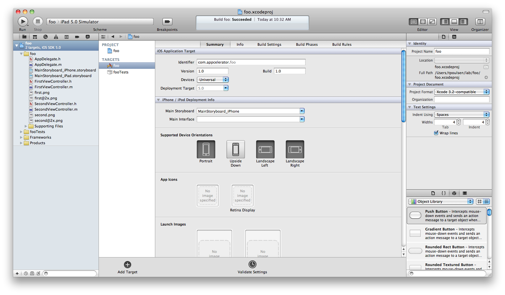

Lab - Native iOS Development
Mission: In this lab, you will build and run a simple 'Hello World' app using iOS native tools. Your goal is to become familiar with the Xcode toolset and the steps that native developers must endure to create even simple iOS projects.
| 1. Open Xcode and create a new project named HelloWorldIOS. Use the Tabbed Application template. Select Universal Application and leave Use Storyboard checked. Save the project to your home directory.  |
|
| This creates the files and folder structure for your application and opens the project the XCode. Using the first Xcode screen, you can edit project-wide details, such as the splash screen or app icon. | |
| 2. In older versions of Xcode, files with the .nib or .xib extensions would represent the user interface elements of your app. In Xcode 4.2, Apple introduced the Storyboard Editor which works with such "nib" files behind the scenes. Either way, you can use the built in Interface Builder tools to create your app's UI. You drag and drop elements from the Object library onto your app's screens. Then, you'd edit the associated controller .h and .m files. For now, drag a control or two to the First View container so that you can see some customization when you build and run your app. As shown in the graphic, select the storyboard file for either iPhone or iPad on the left. In the second pane, expand First View Controller and then expand View (assuming you choose a two-tabbed app template), then select one of the existing controls. Finally, from the Object library (bottom-right pane), drag & drop a control onto the view. You might need to select Object from the list and click the Icon View button to easily see those controls.  |
|
| 3. In the top-left corner, click the Run button. | |
| This will build your application and launch the iPhone or iPad simulator. | |
Summary
This lab was a brief and simple introduction to the Xcode development tools.
Resources